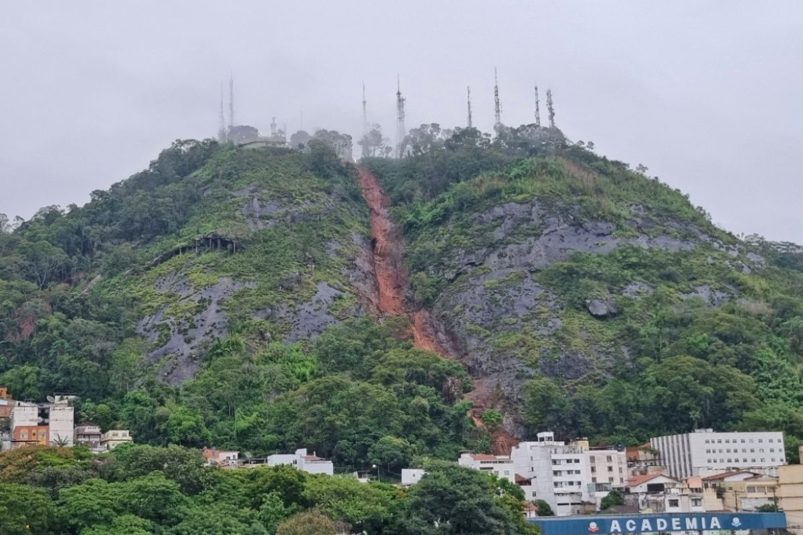
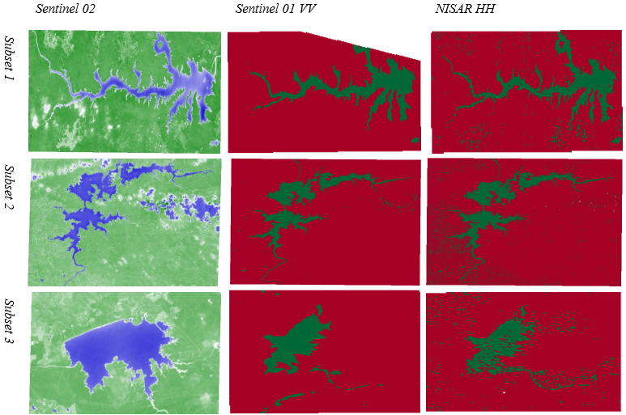
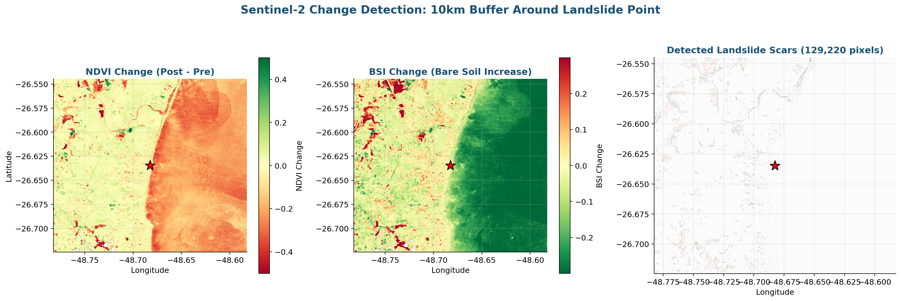

GeoAgentix is an agentic AI platform that turns SAR, optical and hyperspectral satellite data into ground-risk intelligence — autonomously, 10× faster than traditional workflows.
Start a projectMillimetric ground movement detection using Persistent Scatterer (PS) and Small Baseline Subset (SBAS) interferometry. Sentinel-1 C-band, NISAR L-band, TerraSAR-X.
ERA5-Land hourly, CHIRPS daily, GPM IMERG. Intensity-Duration threshold calibration and automated WATCH / WARNING / CRITICAL alerts for rainfall-triggered landslides.
Sentinel-2 multispectral analysis. NDVI, EVI, NDMI, BSI time series. Pre and post-event damage assessment at regional to continental scales.
Isolation Forest anomaly detection, K-Means clustering, LSTM forecasting, Bayesian uncertainty quantification. Site-calibrated models with explainable outputs.
Integrated monitoring dashboards fusing InSAR, rainfall, vegetation & geotechnical data. Real-time APIs, SMS/email alerts, interactive web dashboards.
SPT interpretation, hydraulic conductivity estimation, failure mechanism analysis, slope stability back-analysis. Technical reports for your engineering team.
Satellite data streams in automatically from Sentinel-1, Sentinel-2, NISAR, ERA5 and CHIRPS via Google Earth Engine.
InSAR displacement, vegetation indices, rainfall accumulations computed through reproducible Python pipelines.
Machine learning classifies risk. Bayesian uncertainty quantifies confidence. Thresholds trigger alerts.
Automated alerts via SMS & email. Monthly reports. Interactive dashboards. Board-ready PDFs.
GeoAgentix is an agentic AI platform for satellite-based ground monitoring. We combine InSAR technology, optical and hyperspectral imagery, hydrometeorological data and machine learning to deliver actionable risk intelligence for infrastructure, slopes and communities.
Our team has deep backgrounds in InSAR processing, geotechnical engineering, remote sensing and machine learning. We publish our methods. We open-source our code. We explain our findings in plain language — because decisions depend on trust, not jargon.
Powered by the world's best public satellite programs.
C-band SAR · ESA
Optical · ESA
L-band SAR · NASA/ISRO
Reanalysis · ECMWF
Rainfall · UCSB
Optical · NASA/USGS
3m Daily · Planet
Rainfall · NASA
Continuous urban & infrastructure subsidence monitoring at millimeter precision. Automated alerts and dashboards for asset owners.
Landslide detection and velocity mapping using SBAS time-series. Ideal for slopes, embankments and infrastructure corridors.
Optical satellite change detection for vegetation, land-use and encroachment monitoring. Multi-temporal analysis at scale.
ML-driven debris-flow runout prediction. Hazard scoring and forecasted scenarios validated against RAMMS numerical models.
Multi-layer GIS mapping fusing geospatial, geological and environmental data for site characterization and impact assessment.
Reseller and channel-partner ready. Co-branded or fully white-labelled. You sell, we process, both grow.
Every region has its own ground-risk story. Let us shape the right one for yours.
Talk to our team

Penetrating
vegetation cover

Anomaly detection
+ K-Means clustering
Integrated monitoring fusing InSAR, rainfall, vegetation & geotechnical data into a single decision dashboard. Automated SMS/email alerts.
Every month without monitoring is a month spent gambling with safety.
Tell us about your project — we'll deliver an initial assessment within two weeks.